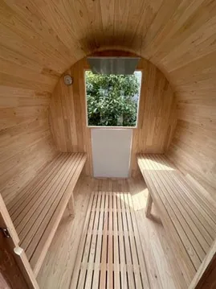

「家庭で本格的なサウナを楽しみたい」「高品質な日本製の屋外家庭用サウナを探している」とお悩みではありませんか？こちらでは、日本製の屋外家庭用サウナの魅力を解説します。
国産ひのきがサウナに最適な理由、耐久性やメンテナンスのしやすさ、さらに6次産業化による高品質とリーズナブルな価格の仕組みを詳しく紹介します。
林業が盛んでいる宮崎県の国産ひのきを活かしたバレルサウナを提供している、Rink SAUNAがお届けする情報です。最後まで読むことで、日本製屋外サウナの選び方がわかり、長く使える理想のサウナを見つけられるでしょう。
日本製屋外家庭用サウナが選ばれる3つの理由
近年、自宅で手軽にサウナを楽しめる家庭用サウナの人気が高まっています。そのなかでも、日本製の屋外サウナが注目を集めているのには、いくつかの理由があります。ここでは、その3つの理由を詳しく見ていきましょう。以下の表に3つの理由をまとめました。
| 理由 | 詳細 |
|---|---|
| 高品質な国産木材の使用 | ひのきなどの木材は耐久性、防虫防腐効果、断熱性に優れている。 |
| 納期厳守の安心感 | 自社工場による国内生産だから、納期の見通しが立てやすく、スケジュール管理も安心。 |
| 安心・安全の品質管理 | 日本製サウナは、高い製造技術と厳格な品質基準のもとで生産されています。 |
第一の理由は、高品質な国産木材の使用です。日本の風土に適応したひのきなどの木材は、耐久性・防虫防腐効果・断熱性に優れており、屋外での使用に最適です。また、木の香りによるリラックスの効果も期待できます。日本製のサウナは、こうした木材の特性を最大限に活かす高度な加工技術によって製造されているため、高温多湿なサウナ室内での木割れ反り・収縮膨張を抑えます。長期間安心して使用できます。
第二の理由は、海外輸入のサウナは、現地から日本への輸送に時間がかかり、天候や港の混雑、通関手続きなどの影響で納期が遅れるケースが少なくありません。一方、日本製のサウナは国内の自社工場で生産されることが多く、納品スケジュールが厳密に管理されています。
そのため、イベントや繁忙期、シーズンオープンなどのタイミングに合わせた導入にも柔軟に対応でき、計画的な設置が可能です。納期の確実さは、安心して導入を進めるうえで大きなメリットとなります。
第三の理由は、日本製の屋外サウナは、JIS・JASが定める基準を満たした建材を使用していることが多く、シックハウス症候群の原因となるホルムアルデヒドなどの有害物質をほとんど含みません。
また、国内の工場で品質管理された製品は、お客様の健康と安全を考えた設計・施工が徹底されており、安心して長く使い続けられるのも大きな魅力です。
これらの理由から、日本製の屋外家庭用サウナは、品質・機能性・安心感を求める人にとって理想的な選択肢といえます。日本製の屋外サウナの特徴や品質の違いを把握したい方は、ぜひRink SAUNAを参考に、自分に合ったサウナを見つけてください。
国産ひのきの品質が屋外サウナに最適な理由

屋外サウナにとって、木材の選定は有用な要素です。過酷な環境に耐えうる耐久性と、快適なサウナ体験を提供する性質が求められます。そこで、屋外サウナに最適な木材を解説します。
サウナに適した木材とは？国産ひのきの特性を解説
サウナの本場フィンランドでは、古くからサウナには木材が使用されてきました。高温多湿という過酷な環境に耐えうる木材でなくてはならず、樹種選びは欠かせない要素です。では、サウナに適した木材とはどのようなものでしょうか？
まず、高温に耐え、変形しにくい材質であることが求められます。加えて、熱伝導率が低いことも必要です。木材に触れたときに「熱い！」と感じてしまうようでは、リラックスしてサウナを楽しめません。
また、湿気に強いことも大切です。腐食しにくい耐久性に加え、水に濡れても滑りにくいという特徴も有効です。これらの条件を満たす木材として、国産ひのきが注目を集めています。国産ひのきは、以下のような特性を備えています。
| 特徴 | 説明 |
|---|---|
| 耐湿・耐久性 | 湿気に強く、腐りにくい。長く使っても劣化しにくい。 |
| 熱伝導率 | 木肌がやわらかくて熱くなりすぎにくい |
| 香り | 心地よい芳香があり、リラックス効果を高める |
| 強度・寸法安定性 | 加工処理によって、含水率を極端に下げ、高温多湿の環境でも変形しにくい |
| 抗菌性 | カビや細菌の繁殖を抑える |
これらの特徴から、国産ひのきはサウナに最適な木材といえるでしょう。日本製の屋外サウナを購入する際には、国産ひのきが使用されているかどうかに注目することで、品質を見極められます。
長く使える高品質な日本製屋外サウナの見分け方
長く使える高品質な日本製屋外サウナを見分けるには、いくつかのポイントがあります。材質・構造・製造工程をしっかり確認することで、購入後に後悔しないサウナ選びが可能です。確認ポイントは以下の通りです。
| 確認ポイント | 詳細 |
|---|---|
| 材質 | 国産ひのきなどの耐久性が高い木材を使用しているか |
| 構造 | 壁の厚さやドアの密閉性、ベンチの安定性など、細部まで丁寧に作られているか |
| 製造工程 | 熟練の職人による丁寧な製造、厳格な品質管理が行われているか |
まず、材質を確認しましょう。屋外サウナは常に風雨にさらされるため、耐久性の高い木材が不可欠です。国産ひのきは、防腐防虫・耐久性・断熱性に優れており、屋外サウナに最適な木材といえます。ひのき特有の芳香もサウナ体験をより豊かにしてくれるでしょう。
次に、サウナの構造をチェックしましょう。壁の厚さやドアの密閉性、ベンチの安定性など、細部まで丁寧に作られているかを確認することが大切です。構造は、サウナの保温性・安全性に直結します。購入前に、ショールームなどで実物を見て確認するのがおすすめです。
最後に、製造工程にも注目しましょう。長持ちする高品質なサウナは、熟練の職人によって丁寧に作られています。製造過程でどのような工夫がされているか、どのような品質管理が行われているかを確認することで、サウナの品質を見極められます。
これらのポイントを押さえることで、日本製の屋外サウナの特徴や品質の違いを把握し、自分に合ったサウナを見つけられるでしょう。
6次産業化によって高品質かつリーズナブルな価格が実現
国産ひのきを使った屋外サウナは、高品質ながらも手の届きやすい価格帯で購入できる場合があります。その背景には、林業を盛んでいる地域での6次産業化の取り組みがあります。
通常は林業会社が伐採（１次）し、製材会社が加工（２次）、販売会社（３次産業）が消費者に届けるという流れです。そのため、それぞれの段階で中間マージンが発生し、最終的な販売価格を押し上げてしまう要因となります。RinkSAUNAはこれらを自社で一気通貫で行うことに取り組んでおり、中間コストの削減を実現しています。
また、Rink SAUNAでは特許申請中のサウナ構造である「Mitsuna構造」により、高気密性を実現。
構造の継ぎ手部分の特殊加工による高い熱効率により、他のバレルサウナでは得られないサウナ室が実現できます。
品質を落とすことなく価格を抑えることで、より多くの方に屋外サウナの魅力を体感してもらえる機会を提供しています。高品質な日本製屋外サウナの購入を検討する際は、このような企業努力にも注目してみてください。
日本製の屋外家庭用サウナについてはRink SAUNAまで
日々の疲れを忘れ、贅沢なリラックス体験を自宅で実現しませんか？日本製の屋外家庭用サウナなら、国産ひのきの香りに包まれながら、心身ともにリフレッシュできます。耐久性・抗菌性に優れた高品質なひのき材を使用し、長期間安心して利用できるのが特徴です。
さらに、6次産業化により、高品質ながらリーズナブルな価格を実現。個人のご家庭はもちろん、宿泊施設や保養所などのビジネスシーンでも豊富な導入実績があります。
全国配送はもちろん、専門のスタッフによる設置対応も可能です。電気ヒーター・薪ストーブ・ガスストーブなど、ライフスタイルに合わせた熱源を選べるのも魅力です。自宅で極上の癒やしを体験したい方、事業にサウナを導入したい方は、ぜひお気軽にお問い合わせください。
Rink SAUNAの提供する屋外用家庭用サウナ購入Q&A
Q1．庭への設置に際して特別な許可や手続きは必要ですか？
A1．設置場所やサイズによりますが、10平米以下の設置であれば建築確認申請は原則不要です。
ただし、防火地域等では申請が必要になるケースもあります。また、火災予防条例に基づく消防署への届出や、建物との安全な距離（離隔距離）の確保も欠かせません。専門的な法規確認についても、プロの視点で伴走いたしますのでお気軽にご質問ください。
Q2．安価な海外製と比べて国産ひのき製の品質や特徴は何が違いますか？
A2．最大の違いは、日本の気候に合わせた耐久性と「納期遅延ゼロ」の確実性です。
Rink SAUNAは宮崎県産の最高級ひのきを自社工場で加工する6次産業化を実現しているため納期トラブルのリスクを最大限抑えた納品システムを確立しています。
さらに、木材の含水率を4～7％まで落とす特殊技術により、屋外でも割れや反りに強い品質を実現しました。適切な環境での使用とメンテナンスを行えば10年以上愛用いただくことも可能です。
Q3．200Vの電源工事やガスの配管はどのように進めれば良いですか？
A3．本格的な家庭用サウナには、電気ストーブなら200Vの専用工事、ガスなら専門の配管工事が必要です。
これらは地元の電気工事店やガス業者様へご依頼いただく形となりますが、設置に必要な図面や仕様書はすべてご購入の際に提供いたします。専門業者様とのやり取りがスムーズに進むよう、技術的なサポートもお任せください。